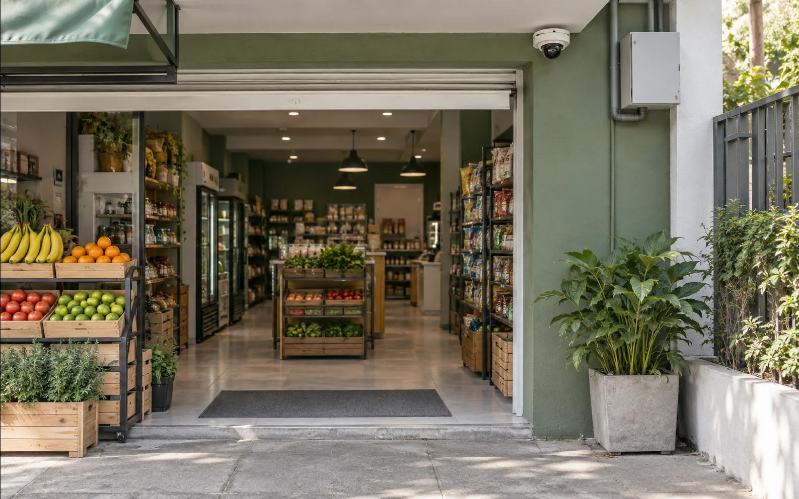
Comercio con puntos ciegos
Recorridos y accesos que necesitan verse con claridad.
Encarnación · Itapúa
Redes, videovigilancia y soporte técnico con diagnóstico previo y entrega documentada.
Solicitar diagnóstico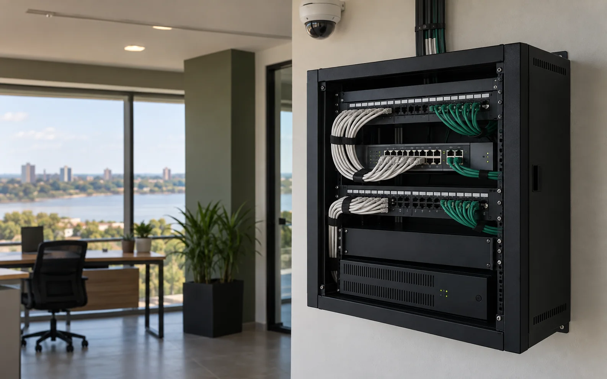
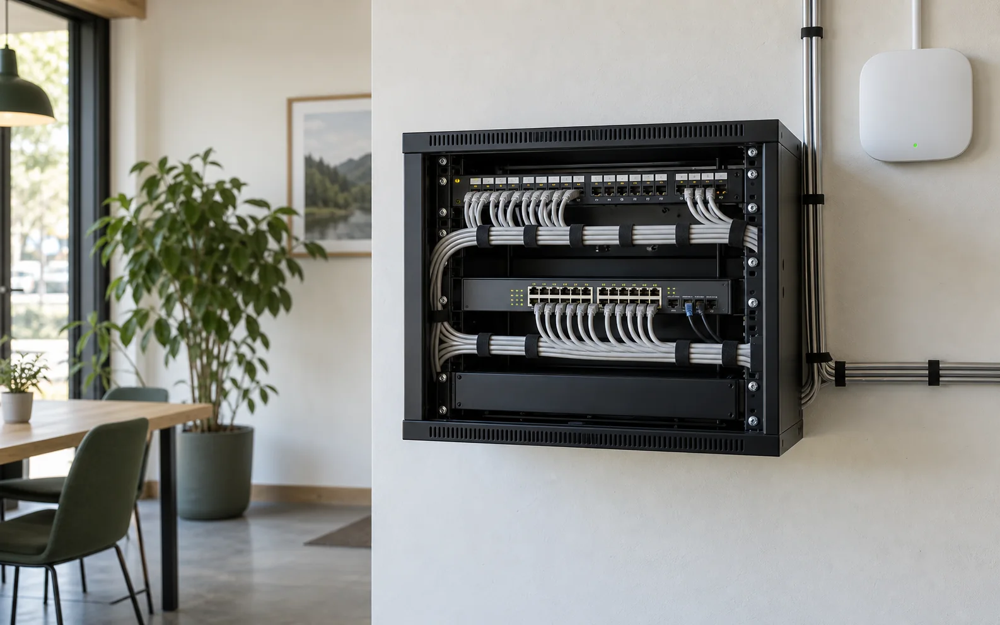
Diseño, cobertura y orden para una conexión que acompaña el trabajo.
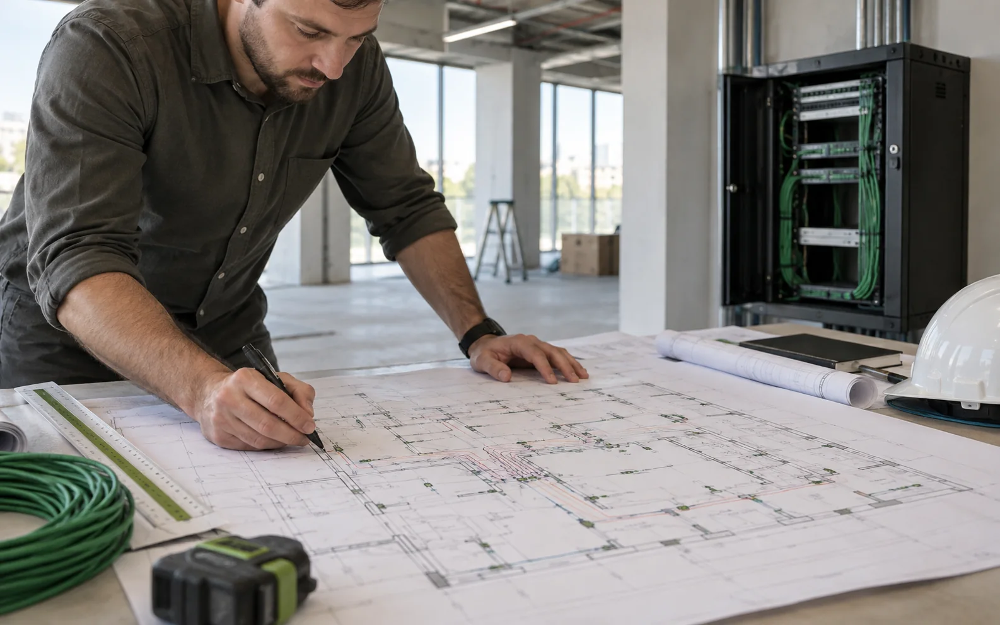
Elaboramos planos con puntos de red, recorridos, canalizaciones y racks para ejecutar el cableado con orden y sin improvisaciones.
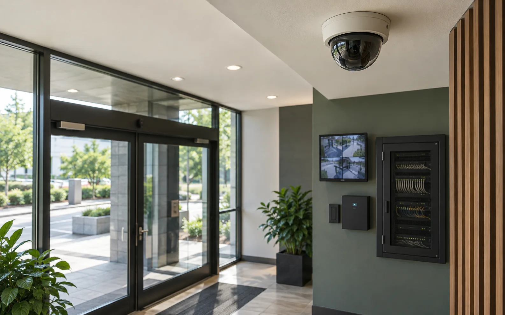
Videovigilancia y control con recorridos claros y equipos bien integrados.
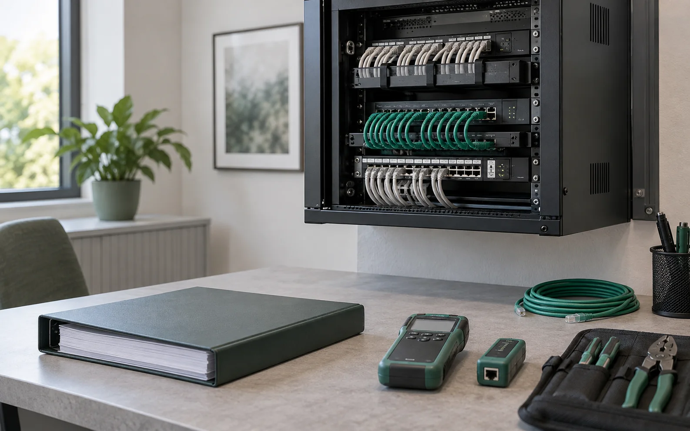
Diagnóstico y documentación para que la instalación pueda mantenerse.
Tecnología aplicada
Seleccionamos por cobertura, uso y mantenimiento. El resultado se entiende, se documenta y se puede cuidar.
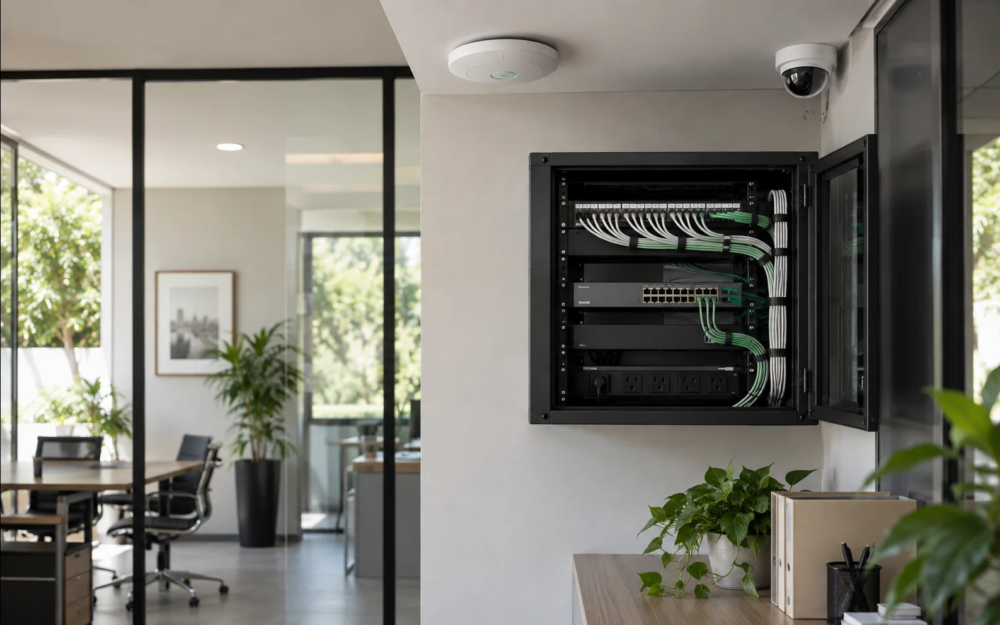
Proceso
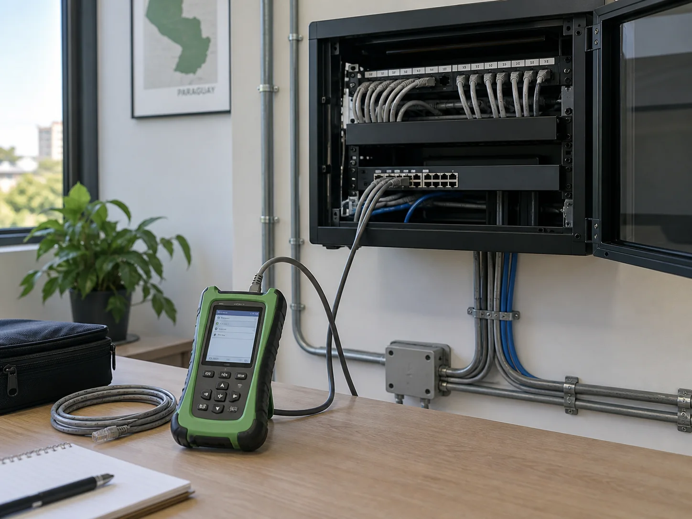
Revisamos el uso y las condiciones reales.
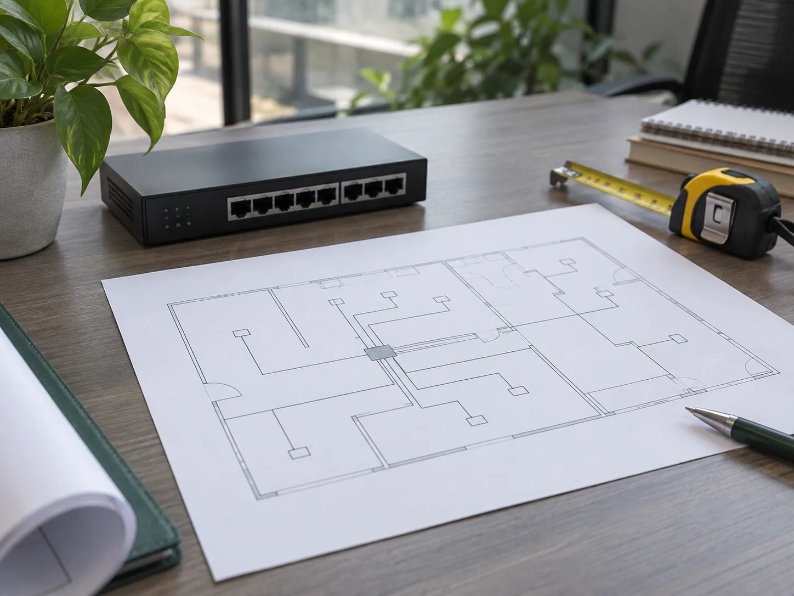
Definimos una solución proporcional.
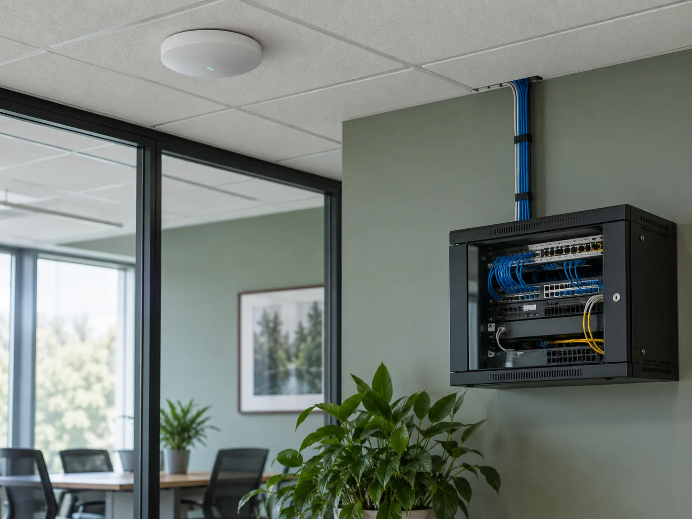
Instalamos con orden y criterio.
Entregamos contexto para mantener.
Aplicaciones frecuentes

Recorridos y accesos que necesitan verse con claridad.
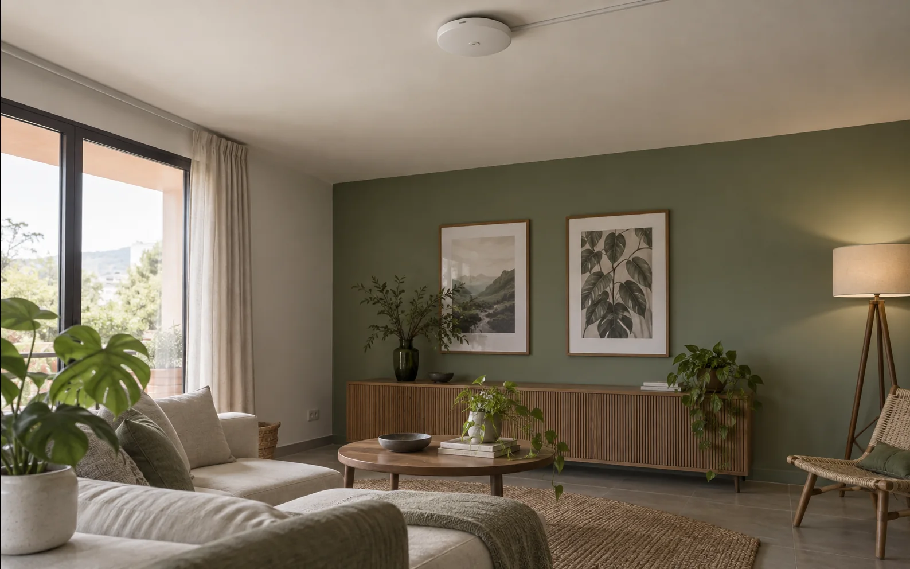
Cobertura pensada para el uso real de cada ambiente.
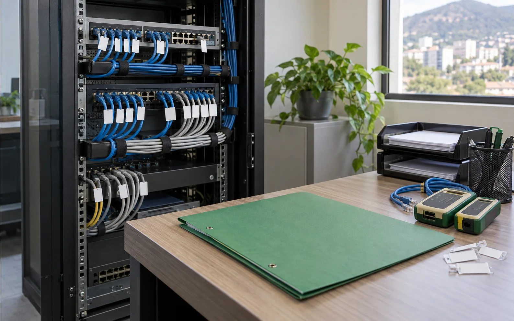
Una base ordenada para resolver sin empezar de cero.
Contanos qué está fallando o qué necesitás instalar.
Hablar por WhatsApp